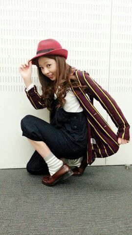
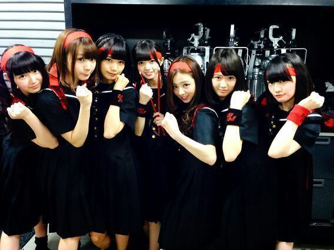
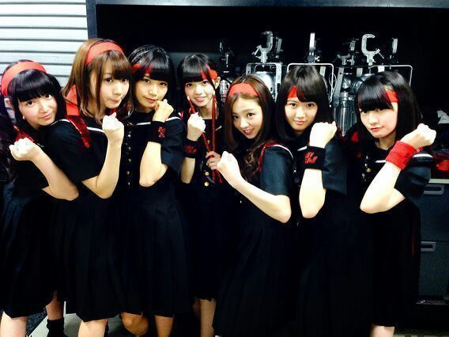

| 2014/04 17 Thu | 氣志團さん (*´∀｀) ろってぃ− |
こんにちわ☆!! Rottyです =・ω・=

この私服 見覚えありますよねぇ？はいそうです。
「 13日の金曜日っ、何かっがっ、起こ〜りそ♪ 」
でお馴染みの 『13日の金曜日』のMVで私が着ている洋服です.♪
皆さんのことなら 写真見てすぐに分かったよね
 ？てへ
？てへ
また 13日の金曜日みたいに 私服でのMV撮影こないかなあ？
あと、ステージに立つ時には 曲にあったステージ映えする服が好きだから、
一度でいいから 皆に着てもらう衣装考えたいって〜 思ったりもする.....*
あっ !!!!! 話それた。
一昨日、火曜日、15日 !!!!!!!!!
氣志團さんが去年の氣志團万博に引き続き
今回は 氣志團 VS 乃木坂46ということで
一緒に対バンをやらせて頂きました！！！
最後には 氣志團さんの演奏で
「会いたかったかもしれない」と「 One Night Carnival 」を一緒に歌わせてもらいました。
氣志團さんはMCでもずっと乃木の話ばかりしてくれて、
あっ !!!!! 話それた。
一昨日、火曜日、15日 !!!!!!!!!
氣志團さんが去年の氣志團万博に引き続き
今回は 氣志團 VS 乃木坂46ということで
一緒に対バンをやらせて頂きました！！！
最後には 氣志團さんの演奏で
「会いたかったかもしれない」と「 One Night Carnival 」を一緒に歌わせてもらいました。
氣志團さんはMCでもずっと乃木の話ばかりしてくれて、
楽屋にきて「僕たちのリハーサル風景見てても面白くないでしょ！？」って言って、
ファミコンにカセットいっぱい持って来てくれたりだとか、本当にそれ以外にもいっぱい優しくしてくれました。
どうしてあんなにいい人達なんだろう？
普段から周りの人に 気遣いし過ぎて気疲れしてるんじゃないかな？ と心配しちゃいました
氣志團さんはこのblogを見てくれているかはわからないけど、、、
見てほしいなぁ〜(*´ー｀*)
乃木團です ★ よろしくう〜(*´ー｀*)

乃木坂初のバンド披露とゆうことで、
７人で「 One Night Carnival 」を演奏致しました。
ろってぃー & まいまい ( ギター )
かなりん ( ベース )
あすか ( ドラム )
せいらりん ( キーボード )
あみ & ひめか ( ボーカル )
実は私、前々からギターをしたい。ってゆう気持ちがあったのですが、楽器を買うお金もなく、
どうしてあんなにいい人達なんだろう？
普段から周りの人に 気遣いし過ぎて気疲れしてるんじゃないかな？ と心配しちゃいました
氣志團さんはこのblogを見てくれているかはわからないけど、、、
見てほしいなぁ〜(*´ー｀*)
乃木團です ★ よろしくう〜(*´ー｀*)

乃木坂初のバンド披露とゆうことで、
７人で「 One Night Carnival 」を演奏致しました。
ろってぃー & まいまい ( ギター )
かなりん ( ベース )
あすか ( ドラム )
せいらりん ( キーボード )
あみ & ひめか ( ボーカル )
実は私、前々からギターをしたい。ってゆう気持ちがあったのですが、楽器を買うお金もなく、
自分で必死になって練習し続ける自信もなく、やりたい!!やりたい!!
...と思いながら、ギターに手を出すことができませんでした。
だから氣志團さんが今回こういった きっかけを作ってくれたこと、本当に本当に本当に感謝しているんです。
全然まだまだまだまだ 下手っピやけど上手く弾けないけどギターを弾いていると 変に一人で落ち込んで悩んでいる時間も減りました。
演奏を始める前、ちょこっとトークで会場を温めようと
皆で サングラスをかけ おちゃらけたことをしたりもしたけど、
前日の夜 寝る直前まで皆と連絡をしあってて
色々な思いがあって、それぞれ皆お家で泣いてたと思います。
まひろは ギターをステージの上でやること自体初めてで、不安もあったけど
ギタードラムベースの先生が、ろってぃ−はギター向いてるよ！って背中を押してくれました。
本番、最高に最高に楽しかったです !!!!!!!!!!
やっぱり 音楽は大好き !!!!!
小さい頃からの 音楽に対する気持ちは変わってなかった。よかった！
らりんも、本番５分前まで泣きながらMCの確認をしてくれた！
あすかも、あの小さ過ぎるだろう顔と 細過ぎるだろう腕でドラムばんばん叩いてくれた！
かなは、頑張っている姿をあまり見せないけど、影でめっちゃ頑張ってる！本人には言ってないけど前々から かなのそうゆうところがまひろは本間に好き！
歌ってくれた、あみとひめかは確実に
最初聞いた時の歌声と 本番の歌声とではかなり違うかった！ 家で、練習してきてくれたことがすごく伝わった！
嬉しかった！
まいまいも練習中に悔し涙流してた！
仕事の合間を使って一緒に練習したね。
なんか あらゆる所が痛くなったね ^^
でも、全然 苦じゃなかったね！
本当にまひろは楽しかった＼(^o^)／
綾小路 翔さんがTwitterで
「 川村真洋さんは バンドマン向きだ 」って書いてあることをスタッフさんから教えてもらった時は、本当に嬉しくて爆発しました。 爆発しました。
本間に〜〜〜ありがとうございました＼(^o^)／
また共演できたら嬉しいです.♪
( ギター教えてください...... ぁ.笑)
ではでは、のし。 ろってぃー
本番、最高に最高に楽しかったです !!!!!!!!!!
やっぱり 音楽は大好き !!!!!
小さい頃からの 音楽に対する気持ちは変わってなかった。よかった！
らりんも、本番５分前まで泣きながらMCの確認をしてくれた！
あすかも、あの小さ過ぎるだろう顔と 細過ぎるだろう腕でドラムばんばん叩いてくれた！
かなは、頑張っている姿をあまり見せないけど、影でめっちゃ頑張ってる！本人には言ってないけど前々から かなのそうゆうところがまひろは本間に好き！
歌ってくれた、あみとひめかは確実に
最初聞いた時の歌声と 本番の歌声とではかなり違うかった！ 家で、練習してきてくれたことがすごく伝わった！
嬉しかった！
まいまいも練習中に悔し涙流してた！
仕事の合間を使って一緒に練習したね。
なんか あらゆる所が痛くなったね ^^
でも、全然 苦じゃなかったね！
本当にまひろは楽しかった＼(^o^)／
綾小路 翔さんがTwitterで
「 川村真洋さんは バンドマン向きだ 」って書いてあることをスタッフさんから教えてもらった時は、本当に嬉しくて爆発しました。 爆発しました。
本間に〜〜〜ありがとうございました＼(^o^)／
また共演できたら嬉しいです.♪
( ギター教えてください...... ぁ.笑)
ではでは、のし。 ろってぃー
コメント(220)
2014/04/17 19:18